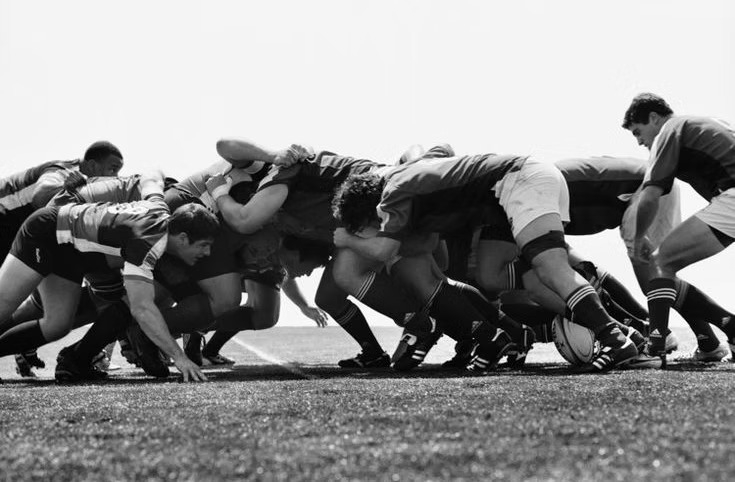
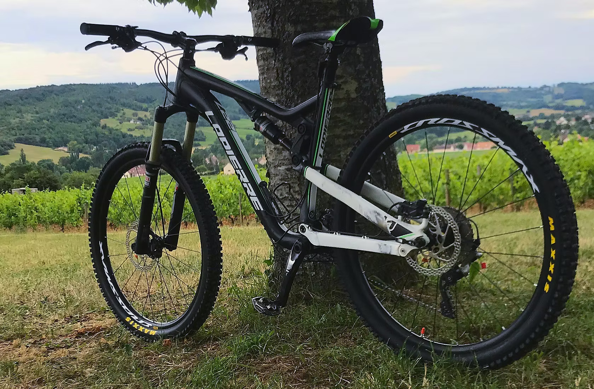

Rugby
I played rugby from 2009 to 2017. Those years taught me values such as teamwork, persistence and dedication.
But I also learnt to trust my teammates, and to improve myself to give my best to my team.

I played rugby from 2009 to 2017. Those years taught me values such as teamwork, persistence and dedication.
But I also learnt to trust my teammates, and to improve myself to give my best to my team.
A sport that I still practice to this day: it's a way to push my own limits, to go out into nature and to relax.
It also taught me fast decision making, which is essential in a sport where you can go up to 25 km/h on paths made of stones.
